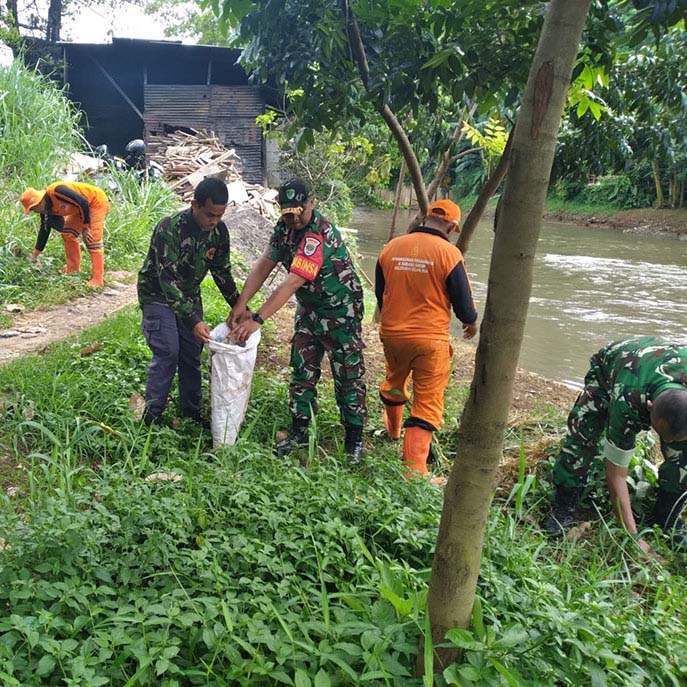

MediaKada | Koramil 05/Kebon Jeruk dan Kelurahan Kelapa Dua Gelar Aksi Hijau Dalam rangka memperingati Hari Sejuta Pohon dan Hari Lingkungan Hidup, Koramil 05/Kebon Jeruk bersama Kelurahan Kelapa Dua menyelenggarakan kegiatan penanaman pohon di bantaran Kali Pesanggrahan, RT 004/08 Kelurahan Kelapa Dua, Kecamatan Kebon Jeruk, Jakarta Barat, pada Rabu (08/01) siang.
Mengusung tema “Jaga Bumi, Jaga Jayakarta Kita Saling Jaga”, kegiatan ini merupakan inisiatif Pangdam Jaya Mayjen TNI Deddy Suryadi yang mendorong setiap satuan setingkat kodim dan koramil untuk menanam minimal 10 pohon di lingkungan masing-masing. Momentum ini sekaligus menyambut peringatan Hari Gerakan Menanam Sejuta Pohon Sedunia yang jatuh setiap tanggal 10 Januari.
Gerakan massal penghijauan ini bertujuan meningkatkan kesadaran publik akan pentingnya pohon dalam mitigasi perubahan iklim, penyediaan oksigen, menjaga siklus air, mencegah erosi, serta melestarikan habitat keanekaragaman hayati.
Selain kegiatan penanaman pohon, koramil 05/Kebon Jeruk juga melaksanakan kegiatan pengumpulan sampah plastic disekitar bantaran kali Pesanggarahan. Bertujuan untuk meningkatkan kepedulian masyarakat terhadap lingkungan, menjaga kebersihan lingkungan khususnya sungai di Jakarta, dan mencegah terjadinya bencana banjir.
Turut hadir dalam kegiatan tersebut Lurah Kelapa Dua Elfin Ridho Putra beserta jajaran, Babinsa Kelapa Dua, personel Koramil 05/Kebon Jeruk, petugas PPSU Kelurahan Kelapa Dua dan warga sekitar.